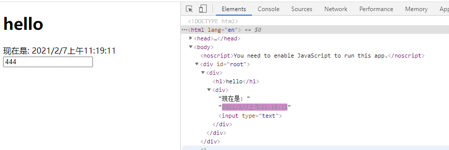
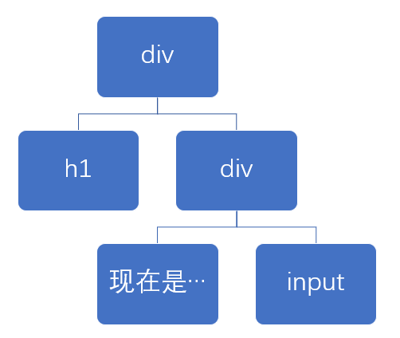
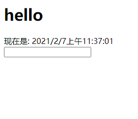

010-diff算法
我们知道，react是先将数据生成一个虚拟dom(命名为vDOM-A)，然后再生成真是DOM
当数据发生变化的时候，会再生成一个虚拟dom(命名为vDOM-B)，然后将vDOM-B和vDOM-A进行对比
- 对比没有变化的，就不会更新真实DOM。
- 对比有变化的，就会更新真实DOM，更新的最小颗粒是标签
我们写个简单的例子:
class App extends React.Component {
state = {
curDate: new Date()
}
componentDidMount () {
setInterval(() => this.setState({curDate:new Date()}), 1000);
}
render () {
return (
<div>
<h1>hello</h1>
<div>现在是: {this.state.curDate.toLocaleString()} <input type="text"/></div>
</div>
);
}
}
页面效果:

对应的虚拟DOM如下:

当数据改变发生改变，例子中是state.curDate发生变化了，react就会触发render()。然后一层层的对比
- 比较
<h1>没有发生变化，那么就不更新 - 比较
<div>发现里面的文字改了，那么就需要更新真实DOM，react更新的最小颗粒是标签，所以连"现在是"这几个字也是会更新的，只是更新出来的一样而已 - 比较
<input>发现没有变化，不更新
验证: 假如diff不是这么算的，那么我们在input输入内容，定时器每1s就会触发render，那么我们输入的内容就不见了。之所以没有出现这种问题，就是因为diff算法起的作用
